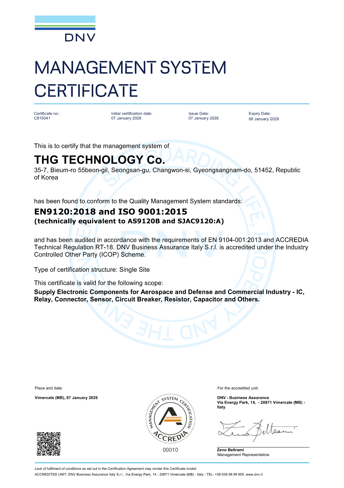

시험장비 개발
항공·방산 전자장비의 시험과 검증을 위한 장비 개발

항공·방산 시험장비 개발과 전자장비 제조.
THG는 개발의 요구를 실물의 완성도로 연결합니다.
항공·시험장비 분야를 표현한 브랜드 이미지
THG 테크놀러지는 시험장비 개발을 중심으로 전자제어장치와 전자장비 제조·조립, 소프트웨어 개발을 수행합니다. 별도의 본사와 제조공장을 기반으로 프로젝트의 요구를 구체화합니다.
THG 소개 ↗
항공·방산 전자장비의 시험과 검증을 위한 장비 개발
전자제어장치 및 전자장비 제작과 조립
장비 운용과 제어를 위한 하드웨어·소프트웨어 연계
THG Technology는 항공우주 및 방산 분야 전자부품 공급에 관한 국제 품질경영시스템 인증을 보유하고 있습니다.
※ 인증 범위는 업로드된 DNV 인증서에 기재된 전자부품 공급 활동에 한정됩니다. 시험장비 개발·제조 전체에 대한 인증을 의미하지 않습니다.

시험장비 개발, 전자장비 제조 및 소프트웨어 개발 문의